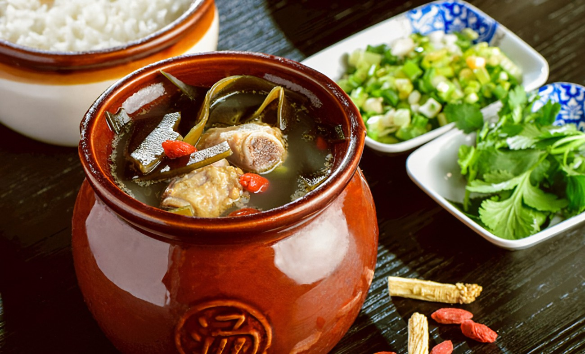
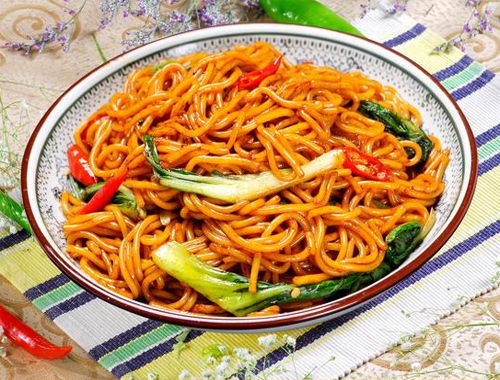
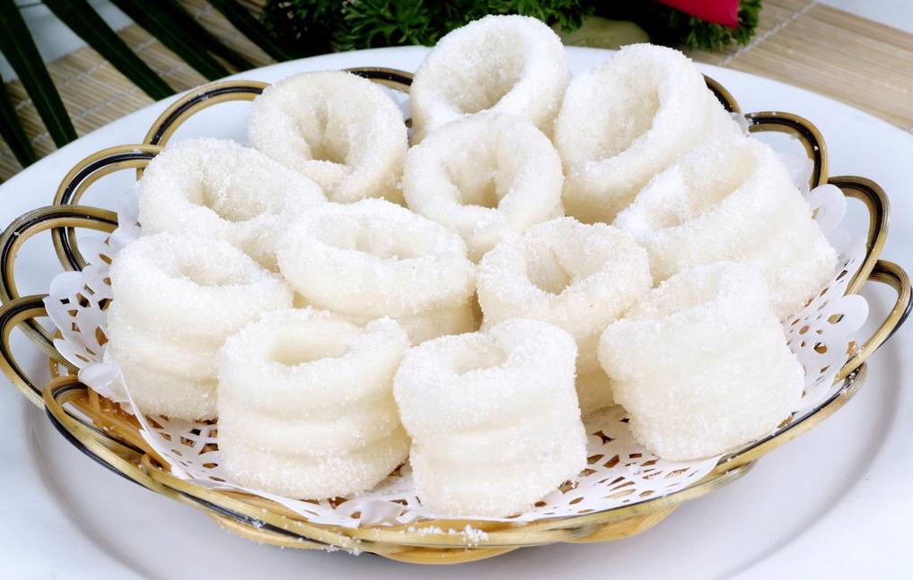

辣味小龙虾

辣味小龙虾是南昌的一道经典夜宵美食。口感鲜美，辣而不燥，是夏天消暑的绝佳选择。
瓦罐汤
瓦罐汤是用瓦罐慢炖而成，味道鲜美，营养丰富，是南昌人家常汤品之一。
南昌米粉
南昌米粉以辣著称，粉丝非常筋道，加上丰富的配料，让人百吃不厌。
特色甜点
南昌的特色甜点种类繁多，从传统的糕点到现代创意甜品，每一口都是甜蜜的享受。
辣味小龙虾是南昌的一道经典夜宵美食。口感鲜美，辣而不燥，是夏天消暑的绝佳选择。
瓦罐汤是用瓦罐慢炖而成，味道鲜美，营养丰富，是南昌人家常汤品之一。
南昌米粉以辣著称，粉丝非常筋道，加上丰富的配料，让人百吃不厌。
南昌的特色甜点种类繁多，从传统的糕点到现代创意甜品，每一口都是甜蜜的享受。